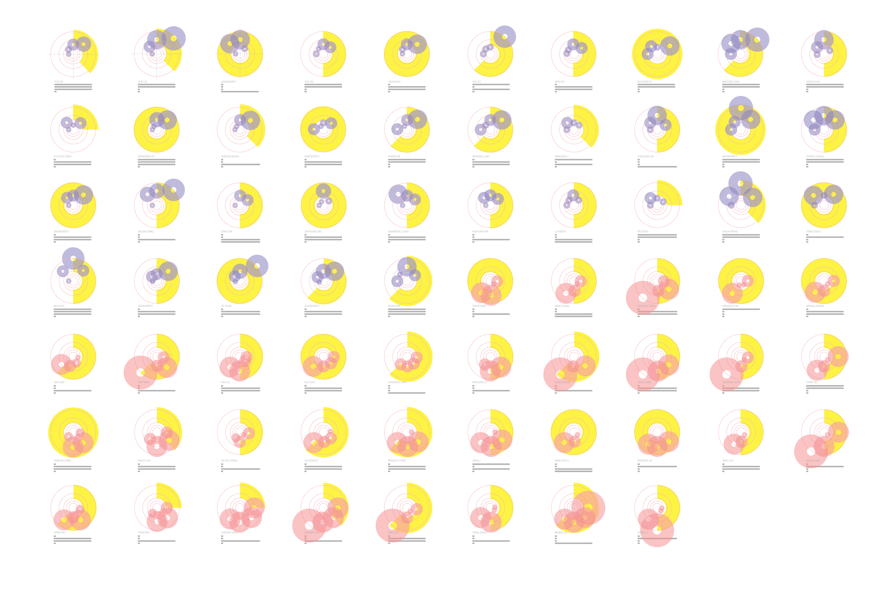
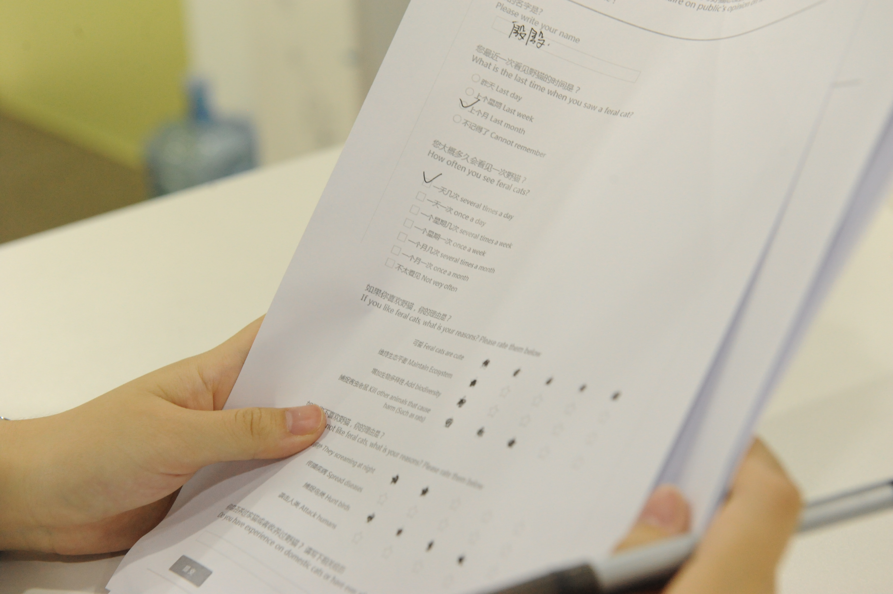

Images and figures
Figure 01
Figure 02
Figure 03

Figure 04
Figure 05
Figure 06
Images and figures
Situation of feral cats in China can be very different from other countries, and the circumstances vary from regions inside China as well.
In my area (Southern part of China), there are actually many feral cats in colleges, residential buildings and restaurants. Most of my friends in my university like them so much so they fed them everyday, which causes an exponontial growth on amount of feral cats around our dorms. I have also met ppl who really dislike feral cats, regarding it as some skunk. So I did a general research on ppl's opinions and attitudes on feral cats in my city.
The research is basically based on questionnaire including a few interviews since I am delivering these questionnaire sheet. The questionnaire is designed to ask two part of questions: The first one is their attitudes, like whether they like feral cats and they are asked to rate the corresponding reasons, the second part is about their actions, like what measures or approaches should be taken on feral cats. (figure 1)
I printed 100 copies and got 69 valid returns. The figure 2 lists every answer from these 69 ppl. The figure 3 is an overall figure of the 69 answers.
It is apparent that the number of ppl from the like side and dislike side equals to each other. The 50% ppl who dislikes feral cats are mainly because of their screaming in night when they are horny, the second biggest reasons are that feral cats spread diseases, causing a contamination problem. However, telling from the figure, attacking human can be very rare.
The other half ppl who regards feral cats adorable almost all because of cuteness (85%), proportions of three other reasons like cats maintain ecosystem, add on biodiversity or kill harmful animals (like rats) are similar to each other, all accounting for about 30%.
When it turns to actions and approaches, answers from different sides can be interesting. Firstly, neuturing is a highly accepted way as more than half of people agrees it on both sides, which can explain that why NTR has been a popular measure globally. The acceptance rate of enthanasia is only half of the neuturing (20%). Most importantly, more than half of the surveyed ppl thinks that we should build shelter or take more humane strategies towards feral cats.
Like all organisms, human exist in constant mutual interaction between themselves and their environment. Anthropogenic changes to the environment influence the evolution of all living things and other physical processes within that environment, and these changes in turn influence the course of human development.This thesis will examine one part of that dialogue: the interplay between humans and animals, especially how animals have exploited human niche construction processes(c.f.B.D.Smith 2017).
Like many other animals, cats have always been human's friends. What if there are something we can do to partially avoid the confliction between feral cats and human? The screaming at night and spread of disease are the highest two reasons which probably make people hate them, since the latter one was proved to be not severe according to scientific reports, I made my decision on helping cats in heat. I kept a cat once myself, I know their sexual habbits, and like many other people out there, neuturing our friends is cruel and inhumane for me. What if some more practical and new way could make our feral-cat-friend happy and we could sleep well peacefully at night?
The Darwinian theory of natural selection states that in a environment, species will either evolve to better fit within these new sets of constraints or else become marginalized(Darwin 1859). These changes in environment are just as important to evolution as natural selection.